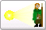

Bedienung - Begrüßungsfenster

|  | Einen neuen Abenteurer mit MAGUS erstellen: MAGuS startet auf der Seite Grundwerte, bereit, einen neuen Abenteurer zu generieren. |
| Einen vorhandenen Abenteurer in MAGuS eingeben: Ein bereits existierender Abenteurer kann in MAGuS eingegeben werden, die hierzu notwendigen Optionen in MAGuS werden automatisch eingestellt. |
|
| Einen Zufallsabenteurer (Grad 1) erstellen: MAGuS startet mit dem Zufallsgenerator |
|
| Einen Abenteurer aus einer Datei laden: Der Fileselector wird beim Start von MAGUS automatisch aufgerufen. |
|
| Dieses Fenster beim nächsten Start wieder anzeigen: Ist dieser Button aktiv (default), so wird das Begrüßunsfenster beim Start von MAGuS geöffnet. |